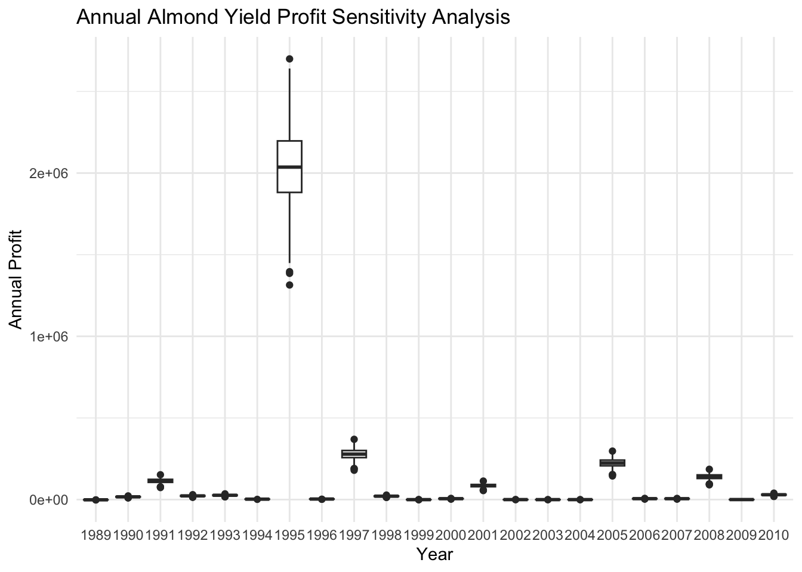
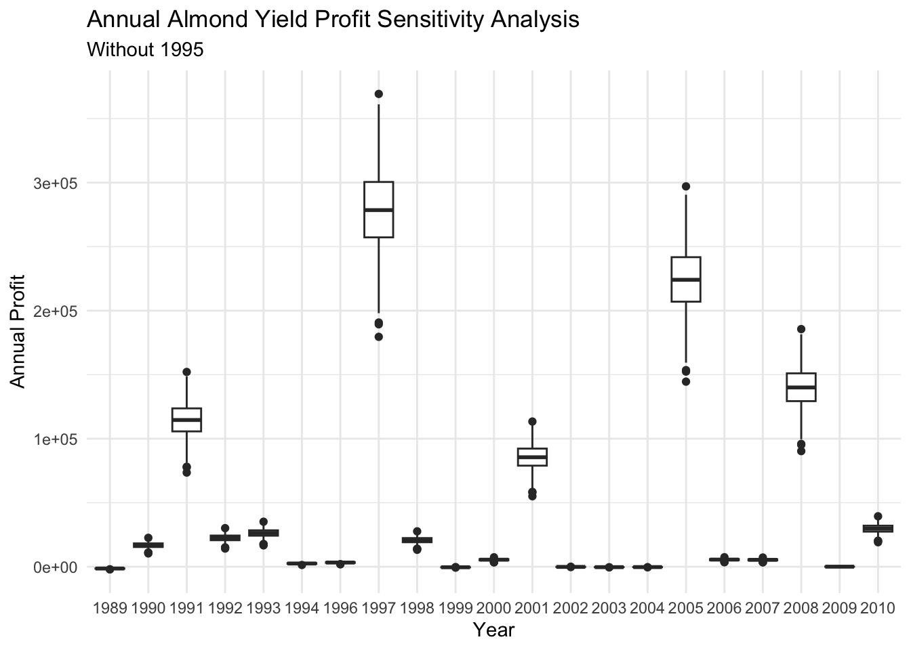

# Load packages used throughout the workflow
library(tidyverse)
library(here)
library(knitr)
library(kableExtra)Assignment 4: Almond Model
EDS 230 - Modeling Environmental Systems
GitHub Repository: https://github.com/jwonyk/EDS-230-HW-ALMOND-YIELD-PROFIT
Introduction
Much of the climate change impacts literature has focused on major annual crops, with comparatively less attention given to perennial crops that play an important role in agricultural systems. Lobell et al. (2006) developed a statistical modeling framework to evaluate the sensitivity of several California perennial crops, including almonds, to changes in temperature and precipitation. Their model relates seasonal climate variables to crop yields and is intended to provide a baseline representation of climate-driven yield responses, while accounting for neither elevated CO₂ concentrations nor farmers’ adaptive management.
Building on this framework, this project implements a simplified version of the almond yield anomaly model described by Lobell et al. (2006) using daily climate data. The yield anomaly estimates are then integrated into a stylized profit model to explore how climate-driven yield variability may translate into economic outcomes. An informal sensitivity analysis is conducted to examine how the modeled almond profit responds to uncertainty in key climate and economic parameters.
Step 1: Load Libraries
Step 2: Load Climate Data
# Read the daily climate time series
climate <- read.table(here("data", "clim.txt"), header = TRUE)Step 3: Clean and Prepare Climate Data for Analysis
We want to isolate the minimum temperature values in February and calculate the total precipitation for January. These are values specified in the paper specifically for almond yield.
# Aggregate daily climate into annual predictors required by the yield anomaly model
# This model only pulls minimum temperature from February (Celsius)
tmin_feb <- climate %>%
group_by(year) %>%
filter(month == 2) %>%
summarize(tmin_c = min(tmin_c)) %>%
pull(tmin_c)
# This model only pulls precipitation from January (mm)
precip_jan <- climate %>%
group_by(year) %>%
filter(month == 1) %>%
summarize(precip = sum(precip)) %>%
pull(precip)Step 4: Build Model
We can begin building our model! We will write a function that calculates almond yield based on climate parameters and will return a vector of estimated yields.
We will source our model from a separate R file that includes the model itself and associated documentation.
# Source yield anomaly model and profit/NPV helper functions
source(here("R", "almond_yield.R"))
source(here("R", "revenue_npv.R"))
source(here("R", "cost_npv.R"))
source(here("R", "yield_profit.R"))To ensure our model is written properly, we can run a simple test with 0 values and expect a value of 0.28.
# Quick sanity check
test <- almond_yield(0, 0)
paste0("Does our model pass the 0 sensitivity test? ",
test == 0.28)[1] "Does our model pass the 0 sensitivity test? TRUE"Step 5: Run Model
Now that we have passed the test, we can run our model using our climate vectors and check our results against the expected values.
- Maximum = 1920 tons/acre
- Minimum = -0.027 tons/acre
- Mean = 182 tons/acre
# Run the almond model on annual predictor vectors
model <- almond_yield(tmin_feb = tmin_feb,
precip_jan = precip_jan)Code
# Create summary table outputs for the report
summary_stats <- data.frame(
Metric = c("Maximum Annual Yield Anomaly",
"Minimum Annual Yield Anomaly",
"Mean Annual Yield Anomaly"),
"Yield Annual Anomaly (Ton/Acre)" =
c(round(max(model), 0),
round(min(model), 3),
round(mean(model), 0)),
check.names = FALSE)
# Print the summary
kable(summary_stats,
caption = "Modeled Annual Almond Yield Anomaly",
col.names = c("Metric", "Yield anomaly (ton/acre)"),
align = "c",
format = "html") %>%
kable_styling(bootstrap_options = c("striped",
"condensed"),
full_width = FALSE,
font_size = 14) %>%
row_spec(0, bold = TRUE) %>%
row_spec(1, background = "#E3F2FD") %>%
row_spec(3, background = "#E3F2FD")| Metric | Yield anomaly (ton/acre) |
|---|---|
| Maximum Annual Yield Anomaly | 1920.000 |
| Minimum Annual Yield Anomaly | -0.027 |
| Mean Annual Yield Anomaly | 182.000 |
Step 6: Incorporate Profit Model into Yield
To link the yield anomaly model with the profit model, we first construct a table of annual climate predictors. Daily climate observations are aggregated to produce one row per year containing the February minimum temperature and January total precipitation. This table serves as the common input for both the yield and profit models.
# Create a table containing minimum temperature from February &
tmin_feb_tbl <- climate %>%
group_by(year) %>%
filter(month == 2) %>%
summarise(tmin_c = min(tmin_c))
# Create a table containing precipitation sum in January
precip_jan_tbl <- climate %>%
group_by(year) %>%
filter(month == 1) %>%
summarise(precip = sum(precip))
# Combined table with temperature and precipitation values per year
combined_temp_precip <- tmin_feb_tbl %>%
left_join(precip_jan_tbl)Joining with `by = join_by(year)`Step 7: Demonstration of Modeling with Wrapper
Using the annual climate predictor table, we run the yield–profit workflow. The profit model internally calls the almond yield anomaly function to compute climate-driven yield anomalies, which are then used to calculate annual revenue, costs, and profit. This step demonstrates how yield and profit models are linked within a single modeling framework.
# Demonstrate workflow (yield anomaly to profit)
testing_profit <- yield_profit(combined_temp_precip, price = 2100,
cost = 1500, discount = 0.12)
# Check the rows
head(testing_profit) scen yield year revenue revenue_npv cost_npv profit
1 1 0.04321564 1989 90.75284 90.75284 1500.0000 -1409.247
2 2 9.67477539 1990 20317.02832 18140.20386 1339.2857 16800.918
3 3 69.31641316 1991 145564.46764 116043.10239 1195.7908 114847.312
4 4 15.82346139 1992 33229.26892 23651.93727 1067.6704 22584.267
5 5 20.49451926 1993 43038.49045 27351.73875 953.2771 26398.462
6 6 2.85987364 1994 6005.73464 3407.81512 851.1403 2556.675Step 8: Informal Sensitivity Analysis (2 parameters)
To evaluate how uncertainty in economic assumptions affects modeled almond profit, we conduct an informal sensitivity analysis. We generate random samples of almond price and production cost from specified distributions. These sampled values represent plausible variability in economic conditions and are used as inputs to the profit model.
# Set seed for randomization
set.seed(42)
# Give a enough sample for the pattern
n_sample <- 300
# Sample two parameter (price and cost)
price_sample <- rnorm(n_sample, mean = 2100, sd = 250)
cost_sample <- rnorm(n_sample, mean = 1500, sd = 200)
# Create a table with variation for price and cost
params <- data.frame(samp = 1:n_sample,
price = price_sample,
cost = cost_sample)Step 9: Rum Simulations
For each sampled combination of price and cost, the yield–profit model is re-run, and the mean annual profit is calculated. The resulting simulations yield a set of profit outcomes that characterize the sensitivity of the modeled almond profit to variations in key economic parameters. These results are summarized and visualized to highlight dominant patterns and trade-offs.
# For each sampled price and cost, recompute yield-driven profit
# and store mean annual profit
sensitivity_results <- data.frame()
sensitivity_plot <- data.frame(matrix(ncol = n_sample,
nrow = length(combined_temp_precip$year)))
sensitivity_plot$year <- combined_temp_precip$year
for (i in 1:n_sample) {
# Run profit model for each sampled parameter set
output <- yield_profit(combined_temp_precip,
price = params$price[i],
cost = params$cost[i],
discount = 0.12)
# Store mean annual profit for this scenario
sensitivity_results <- rbind(sensitivity_results,
data.frame(
samp = i,
price = params$price[i],
cost = params$cost[i],
mean_profit = mean(output$profit, na.rm = TRUE)))
# Store all sensitivity results per year
sensitivity_plot[, i] <- output$profit
}
head(sensitivity_results) samp price cost mean_profit
1 1 2442.740 1499.076 159958.3
2 2 1958.825 1652.048 128094.9
3 3 2190.782 1507.798 143395.7
4 4 2258.216 1647.014 147773.4
5 5 2201.067 1470.705 144086.1
6 6 2073.469 1488.423 135693.2This following box plot shows the variation in Almond profit based on randomly sampling cost and price given our dataset’s average for both variables and a standard deviation of 200 for cost and 250 for price.
# Create box plot with randomly sampled cost and price based on mean
# and standard deviation
plot_all <- sensitivity_plot %>% pivot_longer(cols = -c(year))
ggplot(plot_all, aes(x = as.factor(year), y = value)) +
geom_boxplot() +
labs(x = "Year",
y = "Annual Profit",
title = "Annual Almond Yield Profit Sensitivity Analysis") +
theme_minimal()
plot_all# A tibble: 6,600 × 3
year name value
<int> <chr> <dbl>
1 1989 X1 -1394.
2 1989 X2 -1567.
3 1989 X3 -1413.
4 1989 X4 -1549.
5 1989 X5 -1376.
6 1989 X6 -1399.
7 1989 X7 -1489.
8 1989 X8 -1609.
9 1989 X9 -1138.
10 1989 X10 -1403.
# ℹ 6,590 more rowsThis following box plot shows the variation in Almond profit based on randomly sampling cost and price given our dataset’s average for both variables and a standard deviation of 200 for cost and 250 for price. It excludes 1995 since it was abnormally large and hides other box plots
# Remove 1995
plot_wo_1995 <- sensitivity_plot %>%
filter(year != 1995) %>%
pivot_longer(cols = -c(year))
# Create boxplot with randomly sampled cost and price based on mean
# and standard deviation excluding 1995
ggplot(plot_wo_1995, aes(x = as.factor(year), y = value)) +
geom_boxplot() +
labs(x = "Year",
y = "Annual Profit",
title = "Annual Almond Yield Profit Sensitivity Analysis",
subtitle = "Without 1995") +
theme_minimal()
plot_wo_1995# A tibble: 6,300 × 3
year name value
<int> <chr> <dbl>
1 1989 X1 -1394.
2 1989 X2 -1567.
3 1989 X3 -1413.
4 1989 X4 -1549.
5 1989 X5 -1376.
6 1989 X6 -1399.
7 1989 X7 -1489.
8 1989 X8 -1609.
9 1989 X9 -1138.
10 1989 X10 -1403.
# ℹ 6,290 more rows